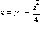
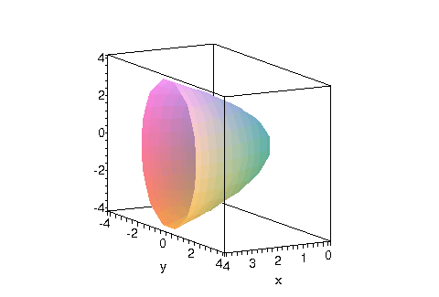
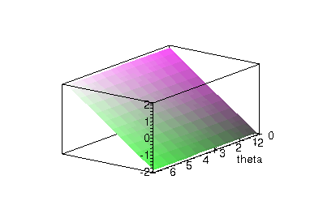
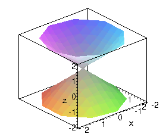
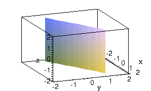
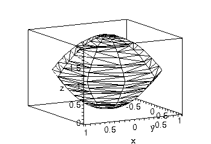
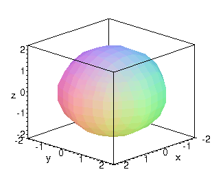
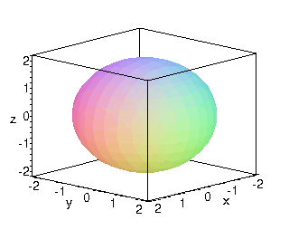
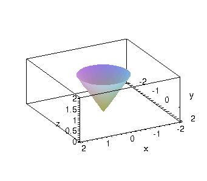
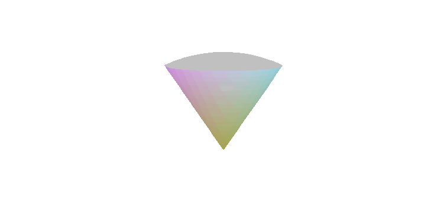

Coordinate systems
| > | restart; with(plots): |
Warning, the name changecoords has been redefined
| > | setoptions3d(axes=boxed, labels=["x","y","z"], scaling=constrained, style=patchnogrid); |
Surfaces in Maple
For our purposes, most surfaces are given by an equation in some coordinate system. This equation defines one coordinate in terms of the other two. If we give Maple this relationship, it can plot the surface for us. This is true whether the equation is given in rectangular, cylindrical, or spherical coordinates. The only catch is that Maple assumes rectangular coordinates unless you tell it otherwise.
For example, consider the elliptic paraboloid

We can use the implicitplot3d command to give the surface equation.
| > | implicitplot3d( x=y^2+z^2/4, x=0..4, y=-4..4, z=-4..4 ); |

Maple doesn't use the names of the variables to determine the coordinate system, as we do.
| > | implicitplot3d( r=z, r=-2..2, theta=0..2*Pi, z=-2..2 ); |

This is not the cylindrical surface r=z. See the next section.
Cylindrical coordinates
Use an extra argument to implicitplot3d to signal cylindrical coordinates. For example, the surface r=z is done by
| > | implicitplot3d( r=z, r=-2..2, theta=0..2*Pi, z=-2..2, coords=cylindrical ); |

The surface theta=Pi/6 is a plane:
| > | implicitplot3d( theta=Pi/6, r=-2..2, theta=0..2*Pi, z=-2..2, coords=cylindrical ); |

You can also combine plots using display. For example, the solid r^2 < z < 2-r^2 is bounded by the surfaces z=r^2 and z=2-r^2.
| > | p1:= implicitplot3d( z=r^2, r=0..1, theta=0..2*Pi, z=0..2, coords=cylindrical, style=hidden ): |
| > | p2:= implicitplot3d( z=2-r^2, r=0..1, theta=0..2*Pi, z=0..2, coords=cylindrical, style=hidden ): |
| > | display( {p1,p2}, color=black ); |

The result is a little clearer in Maple than on a static web page. It looks sort of like a walnut.
Spherical coordinates
Again, this is done by an extra argument to implicitplot3d. So the sphere rho=2 is
| > | implicitplot3d( rho=2, rho=0..2.1, theta=0..2*Pi, phi=0..Pi, coords=spherical); |

This "sphere" was kind of crude. To improve the smoothness, add another argument.
| > | implicitplot3d( rho=2, rho=0..2.1, theta=0..2*Pi, phi=0..Pi, coords=spherical, grid=[24,24,24]); |

The higher the grid numbers, the smoother the surface (but it will take longer to render and print).
The surface phi=Pi/6:
| > | implicitplot3d( phi=Pi/6, rho=0..2, theta=0..2*Pi, phi=0..Pi/2, grid=[21,21,21], coords=spherical ); |

If we plot the cone and the part of the sphere above it together, the result is shaped like a top.
| > | p1:= implicitplot3d( phi=Pi/6, rho=0..2, theta=0..2*Pi, phi=0..Pi/2, grid=[21,21,21], coords=spherical, style=patchnogrid ):
p2:= implicitplot3d( rho=2, rho=0..2.1, theta=0..2*Pi, phi=0..Pi/6, grid=[21,21,21], coords=spherical, style=patchnogrid, color=gray): display( {p1,p2}, axes=none ); |

| > |